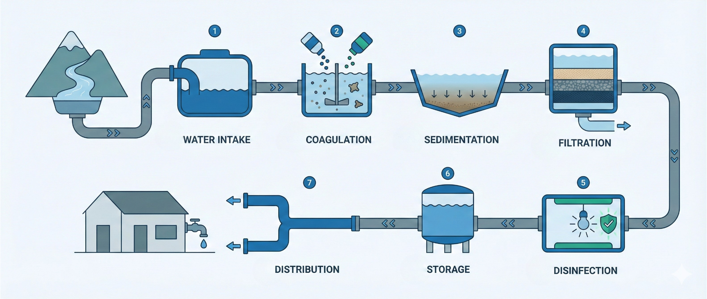

How We Turn Raw Data Into Trusted Intelligence
Starset Analytics — Data Treatment Process

Starset Analytics — Price Transparency Knowledge Brief
5 Tests Your Price Transparency Data Should Pass
How do you know your rate data is real, complete, and trustworthy?
Transparency in Coverage data is now publicly available from every major health insurer. But raw MRF files are massive, messy, and full of traps that produce misleading results if not treated properly. These five analytic tests represent the most common data quality challenges we encounter — and how Starset Analytics addresses each one to deliver intelligence you can act on with confidence.
Starset Analytics
The Modifier Trap
Can your data vendor actually separate the professional and technical components of a radiology charge?
The Challenge
A CT Head/Brain (CPT 70450) has two distinct cost components: the physician's interpretation (Modifier -26) and the facility's technical work (Modifier -TC). Many data sources return a single blended rate with no modifier separation, making it impossible to compare professional fees independently or understand the true facility cost.
How We Address It
Our Transparency in Coverage data preserves every modifier and place-of-service combination published in the payer files. For each provider and billing code, we separate the global rate, professional component (-26), and technical component (-TC) as distinct records, enabling accurate comparison at each level.
The Evidence
| Provider | Type | Modifier | Rate |
|---|---|---|---|
| Crouse Health Hospital | Hospital | Global | $144.64 |
| Crouse Health Hospital | Hospital | -26 (Professional) | $53.86 |
| Crouse Health Hospital | Hospital | -TC (Technical) | $90.79 – $163.44 |
| Albany Medical Center | Hospital | Global | $243.79 |
| Albany Medical Center | Hospital | -26 (Professional) | $90.57 |
| Albany Medical Center | Hospital | -TC (Technical) | $153.22 |
| Steven Lev, MD | Radiologist | -26 (Professional) | $48.16 |
| Empire State Radiology | Radiologist | -26 (Professional) | $42.55 – $58.84 |
Why It Matters
Without modifier separation, brokers cannot isolate the physician interpretation fee from the facility cost. This matters for network comparison, fee schedule benchmarking, and any analysis where professional and technical costs need to be evaluated independently.
See full data
Full evidence panel will be available in a future update.
The Site of Service Trap
Does your data reflect the negotiated rate difference when the same surgeon operates at a hospital versus an ambulatory surgery center?
The Challenge
A total knee arthroplasty (CPT 27447) performed by the same surgeon can cost dramatically different amounts depending on where it takes place. If a data source ignores place-of-service codes or conflates hospital and ASC settings, the rate comparison is meaningless and the cost-saving opportunity in site-of-service steering is invisible.
How We Address It
Our data preserves the place-of-service code for every rate record, as required by the CMS Transparency in Coverage schema. For each provider, we maintain separate rate entries for Hospital (POS 21/22) and ASC (POS 24), enabling direct facility-type comparison for the same surgeon and procedure.
The Evidence
| Surgeon | Carrier | POS 21/22 (Hospital) | POS 24 (ASC) | Rate Type |
|---|---|---|---|---|
| Jeffrey W. Devitt, MD | BCBS MI | $2,274.87 | $2,274.87 | Facility |
| Jeffrey W. Devitt, MD | Cigna PPO | $1,677.10 | $1,677.10 | Facility |
| Eric T. Silberg, MD | BCBS MI | $2,274.87 | $2,274.87 | Facility |
| Creg A. Carpenter, MD | BCBS MI | $2,274.87 | $2,274.87 | Facility |
| Ortho Assoc. of Muskegon | BCBS MI | $2,274.87 | $2,274.87 | Facility |
Why It Matters
In this sample, professional rates are identical across all three facility-based settings — which is consistent with how facility rates work in the Medicare fee schedule. The key insight is not the rate difference here, but that the data captures the distinction. When rates do differ by site of service (as they frequently do for facility fees), our data makes that visible rather than hiding it behind a single blended number.
See full data
Full evidence panel will be available in a future update.
The Ghost Rate Check
If you pull a rate for heart surgery from a psychiatrist's file, should you trust it?
The Challenge
Raw MRF files often contain "ghost rates" — negotiated rates listed for services a provider would never actually perform. A pathologist with a CABG surgery rate or a psychiatrist with an orthopedic fee creates noise that pollutes network comparisons. Blindly pulling rates without specialty context produces data of questionable validity.
How We Address It
Starset Analytics cross-references every rate against national claims data (Komodo) to validate that sufficient billing volume or provider-taxonomy prevalence exists. Rates for services with no claims-based evidence for that provider type are filtered out. Rare but legitimate services are retained — the system is calibrated to eliminate the impossible without discarding the uncommon.
The Evidence
| Provider | Specialty | 99213 (Office Visit) | 33533 (CABG Surgery) |
|---|---|---|---|
| Pathology Associates | Pathology | $56.53 – $133.31 | No rates found |
| Roberto A. Novoa, MD | Pathology | $70.00 – $335.85 | No rates found |
| Kristine Astvatsaturyan, MD | Pathology | $54.86 – $351.44 | No rates found |
| Pacific Pathology Inc | Pathology | $81.33 | No rates found |
Why It Matters
The CABG rates are completely absent — correctly filtered out by claims-based validation. The 99213 office visit rates are present because, while uncommon for pathologists, real billing volume exists (65% of psychiatrists bill 99213 at least once). This is the difference between a system that blindly reports whatever the payer file contains and one that applies clinical and actuarial logic to ensure the data reflects reality.
See full data
Full evidence panel will be available in a future update.
The Inpatient Outlier Check
Does your data contain DRG-based inpatient payments for facility comparisons?
The Challenge
There is variance in how price transparency machine-readable files (MRF) report inpatient rates. Carrier MRF rates often reflect base DRG payments. The tell is there is consistency in % of Medicare. Hospital MRF rates may or may not reflect base DRG payments, and may include the outlier amount. This creates inconsistent DRG rates and distorted apples-to-apples comparisons across hospitals and carriers.
How We Address It
Starset Analytics uses multiple data layers and statistical controls to normalize DRG rates to the base DRG rate. Komodo claims data provides a reference layer, since real claims include both base payments and outlier adjustments. We also apply median and percentile-based filtering to remove extreme values.
The Evidence
| Medical Center | Source | Rate | % of Medicare |
|---|---|---|---|
| NYP / Columbia University Irving | Carrier MRF (Aetna) | $76,186 | 310% |
| Carrier MRF (Cigna) | $77,939 | 317% | |
| Hospital MRF | $94,044 | 383% | |
| SA Normalized | $77,100 | 314% | |
| UCI Medical Center | Carrier MRF (Aetna) | $23,778 | 185% |
| Carrier MRF (Cigna) | $25,100 | 195% | |
| Hospital MRF | $97,873 | 762% | |
| SA Normalized | $24,400 | 190% | |
| Duke University Hospital | Carrier MRF (Aetna) | $35,010 | 252% |
| Carrier MRF (BCBS NC) | $38,222 | 275% | |
| Hospital MRF | $13,800 | 99% | |
| SA Normalized | $36,600 | 263% |
Why It Matters
Outlier-driven values have minimal influence, ensuring the captured DRG rate accurately represents the base DRG payment for comparison purposes.
See full data
Full evidence panel will be available in a future update.
The Outpatient Case Rate Check
Can you tell whether a hospital's quoted rate is the base procedure fee or an all-inclusive case rate?
The Challenge
For an outpatient knee replacement (CPT 27447), some hospitals publish the base negotiated rate for the procedure alone, while others publish a bundled case rate that includes drugs, rehab, and supplies. If your data treats both numbers as equivalent, a $1,798 base rate and a $33,826 case rate appear side by side with no explanation — making meaningful comparison impossible.
How We Address It
We flag each rate with its likely structure: base rate, probable case rate, or a calculated case rate we construct by summing commonly co-occurring episode components (drug J-codes, rehab, etc. appearing in 60%+ of knee replacement episodes). When insufficient component data exists, we flag that transparently rather than guessing.
The Evidence
| Facility | Carrier | Negotiated Rate | Calc. Case Rate | Flag |
|---|---|---|---|---|
| IU Health | Anthem BCBS | $29,163 | — | Likely Case Rate |
| IU Health | Cigna PPO | $33,826 | — | Likely Case Rate |
| IU Health | UHC PPO | $23,366 | — | Likely Case Rate |
| MHP Major Hospital | Aetna POS | $1,798 | $1,839 | Base Rate |
| Community Hosp. North | Anthem BCBS | $4,288 | $4,344 | Base Rate |
| Community Hosp. North | Cigna PPO | $3,897 | — | Insufficient Data |
| Community Hosp. North | UHC PPO | $14,821 | — | Likely Case Rate |
Why It Matters
Without rate-type flagging, IU Health's $33,826 Cigna rate and MHP's $1,798 Aetna rate would appear to be a 19x difference for the same procedure. In reality, one is a bundled case rate and the other is the base procedure fee. Distinguishing these — and being transparent when the data is insufficient to make the call — is what separates actionable intelligence from misleading numbers.
See full data
Full evidence panel will be available in a future update.
Your Data Should Survive These Tests
- Modifier Separation — Professional and technical components distinguished, not blended
- Site of Service — Place-of-service captured per CMS schema for facility-type comparison
- Ghost Rate Filtering — Claims-validated to eliminate impossible provider-service combinations
- Inpatient DRG Rates — Real facility case rates with payer-level variation visible
- Case Rate Transparency — Base rates and bundled rates flagged, not conflated
Want to see your markets run through these tests?
[Contact information]
Starset Analytics — Price Transparency Intelligence